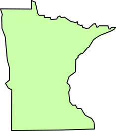
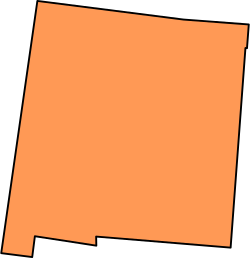

"Fort Pontchartrain du Détroit or Fort Detroit was a fort established on the west bank of the Detroit River by the French officer Antoine de la Mothe Cadillac in 1701." See more.
"The Northwest Territory in the United States (also known as the Old Northwest) was formed after the American Revolutionary War (1775-1783), and was known formally as the Territory Northwest of the River Ohio." See more.
"The War of 1812 was a conflict fought between the United States, the United Kingdom, and their respective allies from June 1812 to February 1815." See more.
"In 1835, the federal government enacted a law that would have created a State of Michigan. A territorial dispute with Ohio over the Toledo Strip, a stretch of land including the city of Toledo, delayed the final accession of statehood." See more.
All information courtesy of https://www.wikipedia.org/
×
Ohio
Historical Events about Ohio:
"On February 19, 1803, President Jefferson signed the act of Congress that approved Ohio's boundaries and constitution." See more.
"The Battle of Lake Erie, sometimes called the Battle of Put-in-Bay, was fought on 10 September 1813, on Lake Erie off the coast of Ohio during the War of 1812." See more.
"During the American Civil War, the State of Ohio played a key role in providing troops, military officers, and supplies to the Union army." See more.
"The Northwest Indian War (1785–1795), also known as the Ohio War, Little Turtle's War, and by other names, was a war between the United States and a confederation of numerous Native American tribes, with support from the British, for control of the Northwest Territory." See more.
All information courtesy of https://www.wikipedia.org/
×
Indiana
Historical Events about Indiana:
"The Indiana Territory was created by a congressional act that President John Adams signed into law on May 7, 1800, to form an organized incorporated territory of the United States that existed from July 4, 1800, to December 11, 1816, when the remaining southern portion of the territory was admitted to the Union as the state of Indiana." See more.
"The Treaty of Fort Wayne, sometimes called the Ten O'clock Line Treaty or the Twelve Mile Line Treaty, is an 1809 treaty that obtained 3,000,000 acres (approximately 12,000 km²) of American Indian land for the white settlers of Illinois and Indiana." See more.
"During the War of 1812, Indiana Territory was home to several conflicts between the United States territorial government and partisan Native American forces backed by the British in Canada. " See more.
"State of Indiana becomes 19th state admitted to the United States of America on December 11, 1816." See more.
All information courtesy of https://www.wikipedia.org/
×
Pennsylvania
Historical Events about Pennsylvania:
"The Philadelphia campaign (1777–1778) was a British initiative in the American Revolutionary War to gain control of Philadelphia, which was then the seat of the Second Continental Congress." See more.
"The History of Pennsylvania begins in 1681 when William Penn received a royal charter from King Charles II of England, although human activity in the region precedes that date." See more.
"The Whiskey Rebellion (also known as the Whiskey Insurrection) was a tax protest in the United States beginning in 1791 and ending in 1794 during the presidency of George Washington, ultimately under the command of American Revolutionary war veteran Major James McFarlane." See more.
"During the American Civil War, the Commonwealth of Pennsylvania played a critical role in the Union, providing a huge supply of military manpower, equipment, and leadership to the Federal government." See more.
All information courtesy of https://www.wikipedia.org/
×
New York
Historical Events about New York:
"King George's War (1744–1748) is the name given to the military operations in North America that formed part of the War of the Austrian Succession (1740–1748). It was the third of the four French and Indian Wars. It took place primarily in the British provinces of New York, Massachusetts Bay, New Hampshire, and Nova Scotia." See more.
"The capture of Fort Ticonderoga occurred during the American Revolutionary War on May 10, 1775, when a small force of Green Mountain Boys led by Ethan Allen and Colonel Benedict Arnold surprised and captured the fort's small British garrison." See more.
"The New York and New Jersey campaign was a series of battles in 1776 and the winter months of 1777 for control of New York City and the state of New Jersey during the American Revolutionary War between British forces under General Sir William Howe and the Continental Army under General George Washington." See more.
"The revolutionary New York Provincial Congress of local representatives assumed the government on May 22, 1775, declared the province the "State of New York" in 1776, and ratified the first New York Constitution in 1777." See more.
All information courtesy of https://www.wikipedia.org/
×
Vermont
Historical Events about Vermont:
"On January 15, 1777, a convention of representatives from towns in the territory declared the region independent, choosing the name the Republic of New Connecticut. On June 2 of that year, the name of the fledgling nation was officially changed to "Vermont" (from the French, les Verts Monts, meaning the Green Mountains) upon the suggestion of Dr. Thomas Young, a member of the Sons of Liberty and a Boston Tea Party leader and mentor to Ethan Allen." See more.
"Adult slavery was abolished in Vermont in July 1777 by a provision in that state's Constitution that male slaves become free at the age of 21 and females at the age of 18." See more.
"Vermont becomes the 14th state, admitted to the United States of America on March 4, 1791" See more.
All information courtesy of https://www.wikipedia.org/
×
Massachusetts
Historical Events about Massachusetts:
"The Province of Massachusetts Bay was a crown colony in British North America and one of the thirteen original states of the United States from 1776. It was chartered on October 7, 1691 by William III and Mary II, the joint monarchs of the kingdoms of England, Scotland, and Ireland." See more.
"The Boston Massacre, known as the Incident on King Street by the British, was a confrontation on March 5, 1770, in which British Army soldiers shot and killed five people while under harassment by locals." See more.
"The Boston Tea Party was a political and mercantile protest by the Sons of Liberty in Boston, Massachusetts, on December 16, 1773. The target was the Tea Act of May 10, 1773, which allowed the British East India company to sell tea from China in American colonies without paying taxes apart from those imposed by the Townshend Acts." See more.
"The Siege of Boston (April 19, 1775 – March 17, 1776) was the opening phase of the American Revolutionary War.[5] New England militiamen prevented the movement by land of the British Army, which was garrisoned in what was then the peninsular city of Boston, Massachusetts." See more.
All information courtesy of https://www.wikipedia.org/
×
Rhode Island
Historical Events about Rhode Island:
"Rhode Island was heavily involved in the slave trade during the post-Revolutionary era prior to industrialization. In 1652, Rhode Island passed the first abolition law in the Thirteen Colonies, banning African slavery, but the law was not enforced by the end of the 17th century. By 1774, the slave population of Rhode Island was 6.3 percent, nearly twice as high as any other New England colony." See more.
"The Colony of Rhode Island and Providence Plantations was one of the original Thirteen Colonies established on the east coast of North America, bordering the Atlantic Ocean. It was an English colony from 1636 until the American Revolution in 1776, when it became the State of Rhode Island and Providence Plantations (commonly known simply as Rhode Island)." See more.
"Rhode Island declares its independence from the United Kingdom, May 4, 1776." See more.
All information courtesy of https://www.wikipedia.org/
×
Connecticut
Historical Events about Connecticut:
"The 'history of Connecticut Industry is a major part of the history of Connecticut. Between the birth of the U.S. patent system in 1790 and 1930, Connecticut had more patents issued per capita than any other state; in the 19th century, when the U.S. as a whole was issued one patent per three thousand population, Connecticut inventors were issued one patent for every 700–1000 residents. Connecticut's first recorded invention was a lapidary machine, by Abel Buell of Killingworth, in 1765." See more.
"The Connecticut Colony or Colony of Connecticut, originally known as the Connecticut River Colony or simply the River Colony, was an English colony in North America that became the state of Connecticut. It was organized on March 3, 1636 as a settlement for a Puritan congregation, and the English permanently gained control of the region in 1637 after struggles with the Dutch." See more.
"In 1775, in the wake of the clashes between British regulars and Massachusetts militia at Lexington and Concord, Connecticut's legislature authorized the outfitting of six new regiments, with some 1,200 Connecticut troops on hand at the Battle of Bunker Hill in June 1775." See more.
All information courtesy of https://www.wikipedia.org/
×
New Jersey
Historical Events about New Jersey:
"The Province of East Jersey, along with the Province of West Jersey, between 1674 and 1702 in accordance with the Quintipartite Deed were two distinct political divisions of the Province of New Jersey, which became the U.S. state of New Jersey. The two provinces were amalgamated in 1702." See more.
"The Battle of Trenton was a small but pivotal battle during the American Revolutionary War which took place on the morning of December 26, 1776, in Trenton, New Jersey." See more.
"On July 2, 1776, the first Constitution of New Jersey was drafted, creating a basic framework for the state government. The New Jersey Constitution of 1776 allowed "all inhabitants of this Colony, of full age, who are worth fifty pounds proclamation money" to vote, including non-whites and widows; married women could not own property under the common law." See more.
All information courtesy of https://www.wikipedia.org/
×
New Hampshire
Historical Events about New Hampshire:
"Adopts constitution for an independent State of New Hampshire, January 5, 1776." See more.
"The Republic of Indian Stream or Indian Stream Republic was an unrecognized constitutional republic in North America, along the section of the border that divides the current Canadian province of Quebec from the U.S. state of New Hampshire. It existed from July 9, 1832, to August 5, 1835." See more.
"New Hampshire fielded 31,650 enlisted men and 836 officers during the American Civil War; of these, 1,803 enlisted men and 131 officers were killed or wounded." See more.
All information courtesy of https://www.wikipedia.org/
×
Maine
Historical Events about Maine:
"The Massachusetts General Court passed enabling legislation on June 19, 1819 separating the District of Maine from the rest of the Commonwealth of Massachusetts. The following month, on July 19, voters in the district approved statehood by 17,091 to 7,132." See more.
"The Aroostook War (sometimes called the Pork and Beans War) was a military and civilian-involved confrontation in 1838–1839 between the United States and the United Kingdom over the international boundary between the British colony of New Brunswick and the U.S. state of Maine." See more.
"Abraham Lincoln chose Maine's Hannibal Hamlin as his first Vice President. The future General Joshua L. Chamberlain and the 20th Maine Volunteer Infantry Regiment played a key role at the Battle of Gettysburg, and the 1st Maine Heavy Artillery Regiment lost more men in a single charge during the Siege of Petersburg than any Union regiment in the [Civil] war." See more.
"Acadia National Park is an American national park located in the state of Maine, southwest of Bar Harbor. The park reserves most of Mount Desert Island and its associated smaller islands along the coast of Maine. Initially designated Sieur de Monts National Monument by presidential proclamation in 1916, the park was renamed and redesignated as Lafayette National Park in 1919." See more.
All information courtesy of https://www.wikipedia.org/
×
Delaware
Historical Events about Delaware:
"From the early Dutch settlement in 1631 to the colony's rule by Pennsylvania in 1682, the land that later became the U.S. state of Delaware changed hands many times. Because of this, Delaware became a very heterogeneous society made up of individuals who were both religiously and culturally diverse." See more.
"Delaware was one of the Thirteen Colonies which revolted against British rule in the American Revolution. After the Revolution began in 1776, the three counties became "The Delaware State", and in 1776 that entity adopted its first constitution, declaring itself to be the "Delaware State". Its first governors went by the title of "President"." See more.
"Slavery had been a divisive issue in Delaware for decades before the American Civil War began. Opposition to slavery in Delaware, imported from Quaker-dominated Pennsylvania, led many slaveowners to free their slaves; half of the state's black population was free by 1810, and more than 90% were free by 1860." See more.
"The effects of Hurricane Isabel in Delaware resulted in one of only thirteen presidential disaster declarations for the state of Delaware. Hurricane Isabel formed from a tropical wave on September 6, 2003 in the tropical Atlantic Ocean." See more.
All information courtesy of https://www.wikipedia.org/
×
Maryland
Historical Events about Maryland:
"The Mason–Dixon line, also called the Mason and Dixon line or Mason's and Dixon's line, was surveyed between 1763 and 1767 by Charles Mason and Jeremiah Dixon in the resolution of a border dispute involving Maryland, Pennsylvania, and Delaware in Colonial America." See more.
All information courtesy of https://www.wikipedia.org/
×
West Virginia
Historical Events about West Virginia:
"State of West Virginia becomes 35th State admitted to the United States of America on June 20, 1863." See more.
"In the summer of 1861, Union troops, which included a number of newly-formed Unionist "Virginia" regiments under General George McClellan, drove off Confederate troops under General Robert E. Lee. This essentially freed Unionists in the northwestern counties of Virginia to form a functioning government of their own as a result of the Wheeling Convention." See more.
"Jamestown was the first settlement of the Virginia Colony, founded in 1607, and served as capital of Virginia until 1690, when the seat of government was moved to Williamsburg." See more.
All information courtesy of https://www.wikipedia.org/
×
Virginia
Historical Events about Virginia:
"The First Battle of Bull Run (the name used by Union forces), also known as the First Battle of Manassas (the name used by Confederate forces), was fought on July 21, 1861 in Prince William County, Virginia, just north of the city of Manassas and about 25 miles west-southwest of Washington, D.C. It was the first major battle of the American Civil War." See more.
"The Battle of Hampton Roads, often referred to as either the Battle of the Monitor and Merrimack (or Virginia) or the Battle of Ironclads, was the most noted and arguably most important naval battle of the American Civil War from the standpoint of the development of navies. It was fought over two days, March 8–9, 1862, in Hampton Roads, a roadstead in Virginia where the Elizabeth and Nansemond rivers meet the James River just before it enters Chesapeake Bay adjacent to the city of Norfolk." See more.
"The Battle of Fredericksburg was fought December 11–15, 1862, in and around Fredericksburg, Virginia in the Eastern Theater of the American Civil War." See more.
"The Battle of Spotsylvania Court House, sometimes more simply referred to as the Battle of Spotsylvania (or the 19th-century spelling Spottsylvania), was the second major battle in Lt. Gen. Ulysses S. Grant's 1864 Overland Campaign of the American Civil War." See more.
All information courtesy of https://www.wikipedia.org/
×
North Carolina
Historical Events about North Carolina:
"The Province of North-Carolina developed differently from South-Carolina almost from the beginning. The Spanish experienced trouble colonizing North Carolina because it had a dangerous coastline, a lack of ports, and few inland rivers by which to navigate. In the 1650s and 1660s, settlers (mostly English) moved south from Virginia, in addition to runaway servants and fur trappers." See more.
"North Carolina had joined the Confederacy with some reluctance, mainly because neighbouring Virginia had done so, and it remained a divided state throughout the war, with the western mountain people retaining much Union sentiment. " See more.
"Great Smoky Mountains National Park is an American national park and a UNESCO World Heritage Site that straddles the ridgeline of the Great Smoky Mountains, part of the Blue Ridge Mountains, which are a division of the larger Appalachian Mountain chain." See more.
All information courtesy of https://www.wikipedia.org/
×
South Carolina
Historical Events about South Carolina:
"South Carolina set up its state government and constitution on March 26, 1776." See more.
"The Battle of Fort Sumter (April 12–13, 1861) was the bombardment of Fort Sumter near Charleston, South Carolina by the Confederate States Army, and the return gunfire and subsequent surrender by the United States Army, that started the American Civil War." See more.
"The Campaign of the Carolinas (January 1 – April 26, 1865), also known as the Carolinas Campaign, was the final campaign conducted by the United States Army (Union army) against the Confederate States Army in the Western Theater." See more.
All information courtesy of https://www.wikipedia.org/
×
Georgia
Historical Events about Georgia:
"The Creek War (1813–1814), also known as the Red Stick War and the Creek Civil War, was a regional war between opposing Creek factions, European empires and the United States, taking place largely in today's Alabama and along the Gulf Coast. The major conflicts of the war took place between state militia units and the "Red Stick" Creeks." See more.
"Pinckney's Treaty, also commonly known as the Treaty of San Lorenzo or the Treaty of Madrid, was signed in San Lorenzo de El Escorial on October 27, 1795 and established intentions of friendship between the United States and Spain. It also defined the border between the United States and Spanish Florida, and guaranteed the United States navigation rights on the Mississippi River." See more.
"The Battle of Chickamauga, fought on September 18 – 20, 1863, between U.S. and Confederate forces in the American Civil War, marked the end of a Union offensive in southeastern Tennessee and northwestern Georgia — the Chickamauga Campaign." See more.
"The civil rights movement (also known as the African-American civil rights movement, American civil rights movement and other terms) in the United States was a decades-long movement with the goal of enforcing constitutional and legal rights for African Americans that other Americans already enjoyed." See more.
All information courtesy of https://www.wikipedia.org/
×
Florida
Historical Events about Florida:
"The Second Seminole War, also known as the Florida War, was a conflict from 1835 to 1842 in Florida between various groups of Native Americans collectively known as Seminoles and the United States, part of a series of conflicts called the Seminole Wars. The Second Seminole War, often referred to as the Seminole War, is regarded as "the longest and most costly of the Indian conflicts of the United States."" See more.
"State of Florida becomes 27th state admitted to the United States of America on March 3, 1845" See more.
"Florida had joined the Confederate States of America in advance of the Civil War, as the third of the original seven states to secede from the Union, following Lincoln's 1860 election. With the smallest population, nearly half of them slaves, Florida only sent 15,000 troops to the Confederate States Army. Its chief importance was in food-supply to the south and support for blockade-runners along its long coastline full of inlets that were hard to patrol." See more.
All information courtesy of https://www.wikipedia.org/
×
Alabama
Historical Events about Alabama:
"The Territory of Alabama (sometimes Alabama Territory) was an organized incorporated territory of the United States. The Alabama Territory was carved from the Mississippi Territory on August 15, 1817 and lasted until December 14, 1819, when it was admitted to the Union as the twenty-second state." See more.
"State of Alabama becomes 22nd state admitted to the United States of America on December 14, 1819" See more.
"The Battle of Day's Gap, fought on April 30, 1863, was the first in a series of American Civil War skirmishes in Cullman County, Alabama, that lasted until May 2, known as Streight's Raid. Commanding the Union forces was Col. Abel Streight; Brig. Gen. Nathan Bedford Forrest led the Confederate forces." See more.
"The Montgomery bus boycott was a political and social protest campaign against the policy of racial segregation on the public transit system of Montgomery, Alabama. It was a seminal event in the civil rights movement. The campaign lasted from December 5, 1955 — the Monday after Rosa Parks, an African-American woman, was arrested for refusing to surrender her seat to a white person — to December 20, 1956, when the federal ruling Browder v. Gayle took effect, and led to a United States Supreme Court decision that declared the Alabama and Montgomery laws that segregated buses were unconstitutional." See more.
All information courtesy of https://www.wikipedia.org/
×
Tennessee
Historical Events about Tennessee:
"The Territory South of the River Ohio, more commonly known as the Southwest Territory, was an organized incorporated territory of the United States that existed from May 26, 1790, until June 1, 1796, when it was admitted to the United States as the State of Tennessee." See more.
"State of Tennessee becomes 16th State admitted to the United States of America on June 1, 1796." See more.
"Martin Luther King Jr., an American clergyman and civil rights leader, was shot at the Lorraine Motel in Memphis, Tennessee, on April 4, 1968." See more.
"The Battle of Nashville was a two-day battle in the Franklin-Nashville Campaign that represented the end of large-scale fighting west of the coastal states in the American Civil War. It was fought at Nashville, Tennessee, on December 15–16, 1864, between the Confederate Army of Tennessee under Lieutenant General John Bell Hood and Federal forces under Major General George H. Thomas." See more.
All information courtesy of https://www.wikipedia.org/
×
Kentucky
Historical Events about Kentucky:
"The Siege of Boonesborough took place in September 1778 during the American Revolutionary War. The attack on the Kentucky settlement of Boonesborough was led by Chief Blackfish, a Shawnee leader allied to the British. Months before the battle, Blackfish had captured and adopted Daniel Boone, the founder of Boonesborough." See more.
"Abraham Lincoln (February 12, 1809 – April 15, 1865) was an American lawyer and politician who served as the 16th President of the United States from 1861 until his assassination in April 1865. Lincoln led the nation through the Civil War, its bloodiest war and its greatest moral, constitutional, and political crisis. In doing so, he preserved the Union, abolished slavery, strengthened the federal government, and modernized the economy." See more.
"The Battle of Perryville (also known as the Battle of Chaplin Hills) was fought on October 8, 1862, in the Chaplin Hills west of Perryville, Kentucky, as the culmination of the Confederate Heartland Offensive (Kentucky Campaign) during the American Civil War.." See more.
"Mammoth Cave National Park is an American national park in central Kentucky, encompassing portions of Mammoth Cave, the longest cave system known in the world." See more.
All information courtesy of https://www.wikipedia.org/
×
Wisconsin
Historical Events about Wisconsin:
"The Territory of Wisconsin was an organized incorporated territory of the United States that existed from July 3, 1836, until May 29, 1848, when an eastern portion of the territory was admitted to the Union as the State of Wisconsin. Belmont was initially chosen as the capital of the territory." See more.
"In December 1847, a second constitutional convention was called. This convention resulted in a new, more moderate state constitution that Wisconsinites approved in a March 1848 referendum, enabling Wisconsin to become the 30th state on May 29, 1848. Wisconsin was the last state entirely east of the Mississippi River (and by extension the last state formed entirely from territory assigned to the U.S. in the 1783 Treaty of Paris) to be admitted to the Union." See more.
"With the outbreak of the American Civil War, the northwestern state of Wisconsin raised 91,379 soldiers for the Union Army, organized into 53 infantry regiments, 4 cavalry regiments, a company of Berdan's sharpshooters, 13 light artillery batteries and 1 unit of heavy artillery. Most of the Wisconsin troops served in the Western Theater, although several regiments served in Eastern armies, including three regiments within the famed Iron Brigade. 3,794 were killed in action or mortally wounded, 8,022 died of disease, and 400 were killed in accidents. The total mortality was 12,216 men, about 13.4 percent of total enlistments." See more.
All information courtesy of https://www.wikipedia.org/
×
Illinois
Historical Events about Illinois:
"During the War of 1812, the Illinois Territory was the scene of fighting between Native Americans and United States soldiers and settlers. The Illinois Territory at that time included the areas of modern Illinois, Wisconsin and parts of Minnesota and Michigan." See more.
"State of Illinois becomes 21st State admitted to the United States of America on December 3, 1818." See more.
"The Black Hawk War was a brief conflict between the United States and Native Americans led by Black Hawk, a Sauk leader. The war erupted soon after Black Hawk and a group of Sauks, Meskwakis, and Kickapoos, known as the "British Band", crossed the Mississippi River, into the U.S. state of Illinois, from Iowa Indian Territory in April 1832." See more.
"The U.S. state of Illinois during the American Civil War was a major source of troops for the Union Army (particularly for those armies serving in the Western Theater of the Civil War), and of military supplies, food, and clothing." See more.
All information courtesy of https://www.wikipedia.org/
×
Mississippi
Historical Events about Mississippi:
"State of Mississippi becomes 20th State admitted to the United States of America on December 10, 1817." See more.
"The Siege of Corinth (also known as the First Battle of Corinth) was an American Civil War engagement lasting from April 29 to May 30, 1862, in Corinth, Mississippi." See more.
"The Siege of Vicksburg (May 18 – July 4, 1863) was the final major military action in the Vicksburg Campaign of the American Civil War." See more.
"Founding state of the Confederate States of America on February 8, 1861." See more.
All information courtesy of https://www.wikipedia.org/
×
Louisiana
Historical Events about Louisiana:
"Hurricane Katrina was an extremely destructive and deadly Category 5 hurricane that struck the Gulf Coast of the United States in August 2005, causing catastrophic damage from central Florida to eastern Texas." See more.
"The Battle of New Orleans took place directly after the signing of the Treaty of Ghent on December 24th, 1814, before news of the treaty could reach the United States; the Americans defended against a British assault on New Orleans, resulting in a major American victory. In just over a half hour, the Americans suffered around 70 casualties, while the British suffered roughly 2,000 casualties." See more.
"Louisiana became a U.S. state on April 30, 1812. The western boundary of Louisiana with Spanish Texas remained in dispute until the Adams-Onís Treaty of 1819, which was formally ratified in 1821,[28] The area referred to as the Sabine Free State serving as a neutral buffer zone, as well as a haven for criminals. Also called "No Man's Land," this part of central and southwestern Louisiana was settled in part by a mixed-race people known as Redbones." See more.
All information courtesy of https://www.wikipedia.org/
×
Arkansas
Historical Events about Arkansas:
"The Little Rock Nine was a group of nine African American students enrolled in Little Rock Central High School in 1957." See more.
"The Battle of Pea Ridge (March 7 – 8, 1862), also known as the Battle of Elkhorn Tavern, was a major battle of the American Civil War fought near Leetown, northeast of Fayetteville, Arkansas." See more.
"The Battle of Chalk Bluff (also known as the Skirmish at Chalk Bluff) (May 1 – 2, 1863) was a military engagement of the American Civil War." See more.
"The Battle of Devil's Backbone (also known as the Action at Devil’s Backbone) was a military engagement in the Trans-Mississippi Theater of the American Civil War. The battle was fought on September 1, 1863, in Sebastian County, Arkansas." See more.
All information courtesy of https://www.wikipedia.org/
×
Missouri
Historical Events about Missouri:
"The Platte Purchase was a land acquisition in 1836 by the United States government from American Indian tribes." See more.
"The Battle of Wilson's Creek, also known as the Battle of Oak Hills, was the first major battle of the Trans-Mississippi Theater of the American Civil War. Fought on August 10, 1861, near Springfield, Missouri, between Federal forces and the Missouri State Guard, it is sometimes called the "Bull Run of the West." See more.
"Price's Missouri Expedition, also known as Price's Raid, was a Confederate raid through the states of Missouri and Kansas in the Trans-Mississippi Theater of the American Civil War during the autumn of 1864." See more.
"Admission to the Union on August 10, 1821 (24th)." See more.
All information courtesy of https://www.wikipedia.org/
×
Iowa
Historical Events about Iowa:
"The Honey War was a bloodless territorial dispute in 1839 between Iowa, then Iowa Territory, and Missouri over their border." See more.
"The First Transcontinental Railroad (also called the Great Transcontinental Railroad, known originally as the "Pacific Railroad" and later as the "Overland Route") was a 1,912-mile (3,077 km) continuous railroad line constructed between 1863 and 1869 that connected the existing eastern U.S. rail network at Omaha, Nebraska/Council Bluffs, Iowa with the Pacific coast at the Oakland Long Wharf on San Francisco Bay." See more.
"Almost immediately after achieving territorial status, a clamor arose for statehood. On December 28, 1846, Iowa became the 29th state in the Union when President James K. Polk signed Iowa's admission bill into law." See more.
All information courtesy of https://www.wikipedia.org/
×
Minnesota

Historical Events about Minnesota:
"The Treaty of Traverse des Sioux (10 Stat. 949) was a treaty signed on July 23, 1851, at Traverse des Sioux in Minnesota Territory between the United States government and Sioux Indian bands in Minnesota Territory." See more.
"Senator John Burton Thompson of Kentucky, in particular, argued that new states would cost the government too much for roads, canals, forts, and lighthouses. Although Thompson and 21 other senators voted against statehood, the enabling act was passed on February 26, 1857." See more.
"In the Anglo-American Convention of 1818, the error regarding the Mississippi River was awkwardly corrected by having the boundary continue due south from the northwest point of the lake, but only to the 49th parallel and then westward along it. The Webster–Ashburton Treaty of 1842 reaffirmed this border. ." See more.
All information courtesy of https://www.wikipedia.org/
×
North Dakota
Historical Events about North Dakota:
"The Dakota Access Pipeline (DAPL) or Bakken pipeline is a 1,172-mile-long (1,886 km) underground oil pipeline in the United States. It begins in the shale oil fields of the Bakken formation in northwest North Dakota and continues through South Dakota and Iowa to an oil terminal near Patoka, Illinois." See more.
"The Enabling Act of 1889 (25 Stat. 676, chs. 180, 276–284, enacted February 22, 1889) is a United States statute that permitted the entrance of Montana and Washington into the United States of America, as well as the splitting of Territory of Dakota into two states: North Dakota and South Dakota." See more.
"North Dakota was admitted to the Union on November 2, 1889, along with its neighboring state, South Dakota." See more.
All information courtesy of https://www.wikipedia.org/
×
South Dakota
Historical Events about South Dakota:
"Red Cloud's War (also referred to as the Bozeman War or the Powder River War) was an armed conflict between the Lakota, Northern Cheyenne, and Northern Arapaho on one side and the United States in Wyoming and Montana territories from 1866 to 1868." See more.
"The Great Sioux War of 1876, also known as the Black Hills War, was a series of battles and negotiations which occurred in 1876 and 1877 between the Lakota Sioux, Northern Cheyenne, and the United States." See more.
"The Wounded Knee Massacre (also called the Battle of Wounded Knee) occurred on December 29, 1890, near Wounded Knee Creek (Lakota: Čhaŋkpé Ópi Wakpála) on the Lakota Pine Ridge Indian Reservation in the U.S. state of South Dakota." See more.
"The Wounded Knee incident began on February 27, 1973, when approximately 200 Oglala Lakota and followers of the American Indian Movement (AIM) seized and occupied the town of Wounded Knee, South Dakota, on the Pine Ridge Indian Reservation." See more.
All information courtesy of https://www.wikipedia.org/
×
Nebraska
Historical Events about Nebraska:
"Baker v. Morton, 79 U.S. (12 Wall.) 150 (1870), was the first "serious" court case to come out of Omaha, Nebraska Territory, prior to statehood. In the trial a claim jumper fought against local land barons to stake out a homestead in the area that was to become the city of Omaha." See more.
"The Omaha Platform was the party program adopted at the formative convention of the Populist (or People's) Party held in Omaha, Nebraska on July 4, 1892." See more.
"A constitution for Nebraska was drawn up in 1866. There was some controversy over Nebraska's admission as a state, in view of a provision in the 1866 constitution restricting suffrage to White voters; eventually, on February 8, 1867, the United States Congress voted to admit Nebraska as a state provided that suffrage was not denied to non-white voters." See more.
All information courtesy of https://www.wikipedia.org/
×
Kansas
Historical Events about Kansas:
"The Kansas–Nebraska Act of 1854 (10 Stat. 277) created the territories of Kansas and Nebraska and was drafted by Democratic Senator Stephen A. Douglas of Illinois and President Franklin Pierce." See more.
"Bleeding Kansas, Bloody Kansas or the Border War was a series of violent civil confrontations in the United States between 1854 and 1861 which emerged from a political and ideological debate over the legality of slavery in the proposed state of Kansas." See more.
"The Pike's Peak Gold Rush (later known as the Colorado Gold Rush) was the boom in gold prospecting and mining in the Pike's Peak Country of western Kansas Territory and southwestern Nebraska Territory of the United States that began in July 1858 and lasted until roughly the creation of the Colorado Territory on February 28, 1861." See more.
"Brown v. Board of Education of Topeka, 347 U.S. 483 (1954), was a landmark United States Supreme Court case in which the Court declared state laws establishing separate public schools for black and white students to be unconstitutional." See more.
All information courtesy of https://www.wikipedia.org/
×
Oklahoma
Historical Events about Oklahoma:
"The Trail of Tears was a series of forced relocations of Native American peoples from their ancestral homelands in the Southeastern United States, to areas to the west (usually west of the Mississippi River) that had been designated as Indian Territory. The forced relocations were carried out by government authorities following the passage of the Indian Removal Act in 1830." See more.
"The Nonintercourse Act (also known as the Indian Intercourse Act or the Indian Nonintercourse Act) is the collective name given to six statutes passed by the Congress in 1790, 1793, 1796, 1799, 1802, and 1834 to set Amerindian boundaries of reservations." See more.
"The Dawes Act of 1887 (also known as the General Allotment Act or the Dawes Severalty Act of 1887), authorized the President of the United States to survey Native American tribal land and divide it into allotments for individual Native Americans." See more.
"The Oklahoma City bombing was a domestic terrorist truck bombing on the Alfred P. Murrah Federal Building in downtown Oklahoma City, Oklahoma, United States on April 19, 1995." See more.
All information courtesy of https://www.wikipedia.org/
×
Texas
Historical Events about Texas:
"The Texas Annexation was the 1845 annexation of the Republic of Texas into the United States of America, which was admitted to the Union as the 28th state on December 29, 1845." See more.
"The Mexican–American War, also known in the United States as the Mexican War and in Mexico as the American intervention in Mexico, was an armed conflict between the United States of America and the United Mexican States (Mexico) from 1846 to 1848. It followed in the wake of the 1845 American annexation of the independent Republic of Texas." See more.
"When the news arrived in Galveston, on June 19, 1865 that they had been set free, the freed slaves rejoiced, creating the celebration of Juneteenth. The State had suffered little during the War but trade and finance was disrupted. Angry returning veterans seized state property, and Texas went through a period of extensive violence and disorder." See more.
"The Comanche campaign is a general term for military operations by the United States government against the Comanche tribe in the newly settled west. Between 1867 and 1875, military units fought against the Comanche people in a series of expeditions and campaigns until the Comanche surrendered and relocated to a reservation." See more.
All information courtesy of https://www.wikipedia.org/
×
New Mexico

Historical Events about New Mexico:
"The Siege of Pueblo de Taos was the final battle during the main phase of the Taos Revolt, an insurrection against the United States during the Mexican–American War. It was also the final major engagement between American forces and insurgent forces in New Mexico during the war. February 3-5 1847." See more.
"The Long Walk of the Navajo , also called the Long Walk to Bosque Redondo (Navajo: Hwéeldi), refers to the 1864 deportation and attempted ethnic cleansing of the Navajo people by the government of the United States of America. Navajos were forced to walk from their land in what is now Arizona to eastern New Mexico." See more.
"The Battle of Glorieta Pass, fought from March 26–28, 1862, in the northern New Mexico Territory, was the decisive battle of the New Mexico Campaign during the American Civil War. Dubbed the "Gettysburg of the West" by some authors, it was intended as the decisive blow by Confederate forces to break the Union possession of the West along the base of the Rocky Mountains." See more.
"The idea of locating Project Y at Oak Ridge was considered, but in the end it was decided that it should be in a remote location. On Oppenheimer's recommendation, the search for a suitable site was narrowed to the vicinity of Albuquerque, New Mexico, where Oppenheimer owned a ranch. In October 1942, Major John H. Dudley of the Manhattan Project was sent to survey the area, and he recommended a site near Jemez Springs, New Mexico. On 16 November, Oppenheimer, Groves, Dudley and others toured the site." See more.
All information courtesy of https://www.wikipedia.org/
×
Colorado
Historical Events about Colorado:
"The Sand Creek Massacre was a massacre of Cheyenne and Arapaho people by the U.S. Army in the American Indian Wars that occurred on November 29, 1864, when a 675-man force of Colorado U.S. Volunteer Cavalry under the command of U.S. Army Colonel John Chivington attacked and destroyed a village of Cheyenne and Arapaho people in southeastern Colorado Territory, killing and mutilating an estimated 70–500 Native Americans, about two-thirds of whom were women and children." See more.
"The Battle of Beecher Island, also known as the Battle of Arikaree Fork, was an armed conflict between elements of the United States Army and several of the Plains Native American tribes in September 1868." See more.
"The Colorado Silver Boom was a dramatic expansionist period of silver mining activity in the U.S. state of Colorado in the late 19th century. The boom started in 1879 with the discovery of silver at Leadville. Over 82 million dollars worth of silver was mined during the period, making it the second great mineral boom in the state, and coming twenty years after the earlier and shorter Colorado Gold Rush of 1859." See more.
"The Columbine High School massacre was a school shooting that occurred on April 20, 1999, at Columbine High School in Columbine, an unincorporated area of Jefferson County (Jeffco), Colorado, United States, near Littleton in the Denver metropolitan area." See more.
All information courtesy of https://www.wikipedia.org/
×
Wyoming
Historical Events about Wyoming:
"Red Cloud's War was an armed conflict between the Lakota, Northern Cheyenne, and Northern Arapaho on one side and the United States in Wyoming and Montana territories from 1866 to 1868. The war was fought over control of the western Powder River Country in present north-central Wyoming." See more.
"The Pony Express was a mail service delivering messages, newspapers, and mail. Officially operating as the Leavenworth and Pike's Peak Express Company of 1859, in 1860 it became the Central Overland California and Pikes Peak Express Company; this firm was founded by William H. Russell, Alexander Majors, and William B. Waddell, all of whom were notable in the freighting business." See more.
"Wyoming's constitution included women's suffrage and a pioneering article on water rights. Congress admitted Wyoming into the Union as the 44th state on July 10, 1890." See more.
"Grand Teton National Park is an American national park in northwestern Wyoming. At approximately 310,000 acres (480 sq mi; 130,000 ha; 1,300 km2), the park includes the major peaks of the 40-mile-long (64 km) Teton Range as well as most of the northern sections of the valley known as Jackson Hole." See more.
All information courtesy of https://www.wikipedia.org/
×
Montana
Historical Events about Montana:
"The Treaty of Fort Laramie (also the Sioux Treaty of 1868) was an agreement between the United States and the Oglala, Miniconjou, and Brulé bands of Lakota people, Yanktonai Dakota and Arapaho Nation, following the failure of the first Fort Laramie treaty, signed in 1851." See more.
"The Battle of the Rosebud (also known as the Battle of Rosebud Creek) occurred on June 17, 1876, in the Montana Territory between the United States Army and its Crow and Shoshoni allies against a force consisting mostly of Lakota Sioux and Northern Cheyenne Indians during the Great Sioux War of 1876." See more.
"The Battle of the Little Bighorn, known to the Lakota and other Plains Indians as the Battle of the Greasy Grass and also commonly referred to as Custer's Last Stand, was an armed engagement between combined forces of the Lakota, Northern Cheyenne, and Arapaho tribes and the 7th Cavalry Regiment of the United States Army." See more.
"Congress approved Montana statehood in February 1889 and President Grover Cleveland signed an omnibus bill granting statehood to Montana, North Dakota, South Dakota and Washington once the appropriate state constitutions were crafted." See more.
All information courtesy of https://www.wikipedia.org/
×
Idaho
Historical Events about Idaho:
"The Convention respecting fisheries, boundary and the restoration of slaves between the United States of America and the United Kingdom of Great Britain and Ireland, also known as the London Convention, Anglo-American Convention of 1818, Convention of 1818, or simply the Treaty of 1818, was an international treaty signed in 1818 between the above parties." See more.
"The Adams-Onís Treaty of 1819, also known as the Transcontinental Treaty, the Florida Purchase Treaty, or the Florida Treaty, was a treaty between the United States and Spain in 1819 that ceded Florida to the U.S. and defined the boundary between the U.S. and New Spain." See more.
"Yellowstone National Park is an American national park located in Wyoming, Montana, and Idaho. It was established by the U.S. Congress and signed into law by President Ulysses S. Grant on March 1, 1872." See more.
"The Bannock War of 1878 was an armed conflict between the U.S. military and Bannock and Paiute warriors in Southern Idaho and Northern Nevada, lasting from June to August 1878. The Bannock-Paiute totaled about 500 warriors; they were led by Chief Buffalo Horn who was killed in action in June." See more.
All information courtesy of https://www.wikipedia.org/
×
Utah
Historical Events about Utah:
"The Mountain Meadows Massacre was a series of attacks on the Baker–Fancher emigrant wagon train, at Mountain Meadows in Utah. The attacks began on September 7, 1857, and culminated on September 11, 1857, resulting in the mass slaughter of the emigrant party by members of the Utah Territorial Militia from the Iron County district." See more.
"The Morrisite War was a skirmish between a Latter Day Saint sect known as the "Morrisites" and the Utah territorial government. June 1862." See more.
"The Black Hawk War, or Black Hawk's War, from 1865 to 1872, is the name of the estimated 150 battles, skirmishes, raids, and military engagements between primarily Mormon settlers in Sanpete County, Sevier County and other parts of central and southern Utah, and members of 16 Ute, Southern Paiute, Apache and Navajo tribes, led by a local Ute war chief, Antonga Black Hawk. The conflict resulted in the abandonment of some settlements and hindered Mormon expansion in the region." See more.
"The 2002 Winter Olympics, officially the XIX Olympic Winter Games and commonly known as Salt Lake 2002, was a winter multi-sport event that was celebrated from 8 to 24 February 2002 in and around Salt Lake City, Utah, United States." See more.
All information courtesy of https://www.wikipedia.org/
×
Arizona
Historical Events about Arizona:
"The Gadsden Purchase (known in Mexico as Spanish: Venta de La Mesilla, "Sale of La Mesilla") is a 29,670-square-mile (76,800 km2) region of present-day southern Arizona and southwestern New Mexico that the United States purchased via a treaty that took effect on June 8, 1854." See more.
"The Powell Geographic Expedition of 1869, led by American naturalist John Wesley Powell, was the first thorough cartographic and scientific investigation of long segments of the Green and Colorado rivers in the southwestern United States, including the first recorded passage of white men through the entirety of the Grand Canyon." See more.
"Theodore Roosevelt Dam is a dam on the Salt River located northeast of Phoenix, Arizona. The dam is 357 feet (109 m) high and forms Theodore Roosevelt Lake as it impounds the Salt River. Originally built between 1905 and 1911; the dam was renovated and expanded in 1989-1996." See more.
"Petrified Forest National Park is an American national park in Navajo and Apache counties in northeastern Arizona." See more.
All information courtesy of https://www.wikipedia.org/
×
California
Historical Events about California:
"On February 19, 1862, the 37th United States Congress passed An Act to Prohibit the "Coolie Trade" by American Citizens in American Vessels. The act, which would be called the Anti-Coolie Act of 1862 in short, was passed by the California legislature in an attempt to appease rising anger among white laborers about salary competition created by the influx of Chinese immigrants at the height of the California gold rush." See more.
"The California agricultural strikes of 1933 were a series of strikes by agricultural workers in the U.S. state of California in 1933." See more.
"On June 5, 1968, presidential candidate Robert F. Kennedy was mortally wounded shortly after midnight Pacific Daylight Time at the Ambassador Hotel in Los Angeles. Earlier that evening, the 42 year-old junior Senator from New York was declared the winner in the South Dakota and California presidential primaries in the 1968 election. He was pronounced dead at 1:44 AM on June 6, about 26 hours after he had been shot." See more.
"The Santa Barbara oil spill occurred in January and February 1969 in the Santa Barbara Channel, near the city of Santa Barbara in Southern California. It was the largest oil spill in United States waters by that time, and now ranks third after the 2010 Deepwater Horizon and 1989 Exxon Valdez spills." See more.
All information courtesy of https://www.wikipedia.org/
×
Nevada
Historical Events about Nevada:
"The Treaty of Guadalupe Hidalgo, officially titled the Treaty of Peace, Friendship, Limits and Settlement between the United States of America and the Mexican Republic, is the peace treaty signed on February 2, 1848, in the Villa de Guadalupe Hidalgo between the United States and Mexico that ended the Mexican–American War (1846–1848)." See more.
"The Comstock Lode is a lode of silver ore located under the eastern slope of Mount Davidson, a peak in the Virginia Range in Nevada (then western Utah Territory). It was the first major discovery of silver ore in the United States, and named after American miner Henry Comstock." See more.
"The first transcontinental telegraph (completed October 24, 1861) was a line that connected the existing network in the eastern United States to a small network in California, by means of a link between Omaha, Nebraska and Carson City, Nevada, via Salt Lake City. It was a milestone in electrical engineering and in the formation of the United States of America." See more.
"Hoover Dam is a concrete arch-gravity dam in the Black Canyon of the Colorado River, on the border between the U.S. states of Nevada and Arizona. It was constructed between 1931 and 1936 during the Great Depression and was dedicated on September 30, 1935, by President Franklin D. Roosevelt." See more.
All information courtesy of https://www.wikipedia.org/
×
Oregon
Historical Events about Oregon:
"The Hells Canyon massacre (also known as the Snake River massacre) was a massacre where thirty-four Chinese goldminers were ambushed and murdered in May 1887. In 2005, the area was renamed Chinese Massacre Cove, and a memorial was placed there in 2012 in three languages, Chinese, English, and Nez Perce." See more.
"The Nez Perce War was an armed conflict that pitted several bands of the Nez Perce tribe of Native Americans and their allies, a small band of the Palouse tribe led by Red Echo (Hahtalekin) and Bald Head (Husishusis Kute), against the United States Army. The conflict, fought between June and October 1877, stemmed from the refusal of several bands of the Nez Perce, dubbed "non-treaty Indians," to give up their ancestral lands in the Pacific Northwest and move to an Indian reservation in Idaho." See more.
"Crater Lake National Park is an American national park located in southern Oregon. Established in 1902, Crater Lake is the fifth-oldest national park in the United States and the only national park in Oregon." See more.
"Bonneville Lock and Dam consists of several run-of-the-river dam structures that together complete a span of the Columbia River between the U.S. states of Oregon and Washington at River Mile 146.1. The dam is located 40 miles (64 km) east of Portland, Oregon, in the Columbia River Gorge." See more.
All information courtesy of https://www.wikipedia.org/
×
Washington
Historical Events about Washington:
"The Oregon Treaty is a treaty between the United Kingdom and the United States that was signed on June 15, 1846, in Washington, D.C. Signed under the presidency of James K. Polk, the treaty brought an end to the Oregon boundary dispute by settling competing American and British claims to the Oregon Country." See more.
"The Pig War was a confrontation in 1859 between the United States and United Kingdom over the British–U.S. border in the San Juan Islands, between Vancouver Island and the mainland." See more.
"The internment of Japanese Americans in the United States during World War II was the forced relocation and incarceration in concentration camps in the western interior of the country of between 110,000 and 120,000[5] people of Japanese ancestry, most of whom lived on the Pacific coast." See more.
"On May 18, 1980, a major volcanic eruption occurred at Mount St. Helens, a volcano located in Skamania County, in the U.S. state of Washington." See more.
All information courtesy of https://www.wikipedia.org/
×
Alaska
Historical Events about Alaska:
"The Alaska Purchase was the United States' acquisition of Alaska from the Russian Empire on March 30, 1867, by a treaty ratified by the United States Senate, and signed by President Andrew Johnson." See more.
"The Klondike Gold Rush was a migration by an estimated 100,000 prospectors to the Klondike region of the Yukon in north-western Canada between 1896 and 1899. Gold was discovered there by local miners on August 16, 1896, and, when news reached Seattle and San Francisco the following year, it triggered a stampede of prospectors." See more.
"The Aleutian Islands Campaign was a military campaign conducted by the United States and Japan in the Aleutian Islands, part of the Alaska Territory, in the American theater and the Pacific theater of World War II starting on 3 June 1942." See more.
"The Exxon Valdez oil spill occurred in Prince William Sound, Alaska, March 24, 1989, when Exxon Valdez, an oil tanker owned by Exxon Shipping Company, bound for Long Beach, California, struck Prince William Sound's Bligh Reef." See more.
All information courtesy of https://www.wikipedia.org/
×
Hawaii
Historical Events about Hawaii:
"The attack on Pearl Harbor was a surprise military strike by the Imperial Japanese Navy Air Service against the United States naval base at Pearl Harbor, Hawaii Territory, on the morning of December 7, 1941. The attack, also known as the Battle of Pearl Harbor, led to the United States' entry into World War II." See more.
"The Newlands Resolution was a joint resolution passed on July 4, 1898 by the United States Congress to annex the independent Republic of Hawaii. In 1900, Congress created the Territory of Hawaii." See more.
"The overthrow of the Kingdom of Hawaii began on January 17, 1893, with a coup d'état against Queen Liliʻuokalani on the island of Oahu by foreign residents residing in Honolulu, mostly United States citizens, and subjects of the Kingdom of Hawaii." See more.
"State of Hawaiʻi becomes 50th State admitted to the United States of America on August 21, 1959." See more.
All information courtesy of https://www.wikipedia.org/